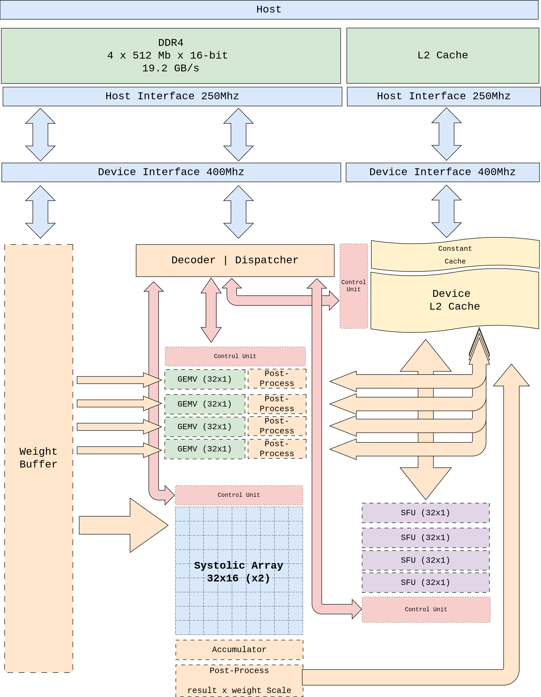

탑레벨 아키텍처#
{kind=link}

Figure 1. pccx v002 탑레벨 블록 다이어그램. 호스트(DDR4)와 디바이스(L2 Cache) 간의 데이터 경로, 클럭 도메인 크로싱, 이기종 컴퓨트 코어의 배치를 나타냅니다.#
1. 설계 원칙#
탑레벨은 다음 네 가지 원칙에 따라 구성됩니다.
클럭 도메인 분리 — AXI 인프라(250 MHz) 와 코어 로직(400 MHz) 을 분리하여, AXI 프로토콜 타이밍에 코어 주파수가 제약되지 않도록 합니다.
분리형 데이터플로우 — 명령어 디코딩(프론트엔드) 과 실행(백엔드) 을 비동기 FIFO 로 분리하여 파이프라인 스톨을 제거합니다.
Weight 와 Activation 의 경로 분리 — Weight Buffer 는 Host DDR4 에서 직접 스트리밍되고, Activation 은 중앙 L2 Cache 로부터 공급되어, 두 스트림이 인터커넥트 상에서 충돌하지 않습니다.
중앙 집중형 L2 캐시 — GEMM, GEMV, SFU 가 물리적으로 L2 에 근접 배치되어, 레이어 간 액티베이션 재배치 비용을 제거합니다.
2. 주요 블록 구성#
블록 |
도메인 |
역할 |
|---|---|---|
Host Interface |
250 MHz |
AXI-Lite (제어 레지스터), AXI HP 포트(데이터 스트리밍), AXI ACP (호스트-캐시 DMA). CDC FIFO 를 통해 400 MHz 도메인과 연결. |
Device Interface |
400 MHz |
코어측 AXI 슬레이브. Weight Bus 와 L2 Cache R/W 포트 브릿지 담당. |
Decoder / Dispatcher |
400 MHz |
64-bit 명령어를 디코딩하여 opcode 별 제어 μop 를 발행. 명령어 인코딩 참조. |
Control Unit |
400 MHz |
글로벌 스케줄러. 의존성 해소, 디스패치 순서 결정, 완료 통지. |
Weight Buffer |
400 MHz |
HP 포트에서 스트리밍된 INT4 가중치를 GEMM/GEMV 코어로 브로드캐스트. |
L2 Cache |
400 MHz |
중앙 공유 캐시. 액티베이션, 중간 결과, KV 캐시 저장. |
Constant Cache |
400 MHz |
MEMSET 으로 설정되는 shape / size 포인터, scale factor 등 상수 저장. |
Systolic Array (32×16 ×2) |
400 MHz |
GEMM 전용 이차원 시스톨릭 어레이. GEMM 코어 (시스톨릭 어레이) 참조. |
GEMV Core (32×1 ×4) |
400 MHz |
병렬 벡터 MAC + reduction tree. GEMV 코어 참조. |
SFU (32×1 ×4) |
400 MHz |
Softmax/GELU/RMSNorm 등 비선형 함수. SFU 코어 (Complex Vector Operations) 참조. |
3. 클럭 도메인 전략#
3.1 도메인 분할 근거#
KV260 의 AXI 인터커넥트는 250 MHz 에서 타이밍 클로저가 용이하지만, 코어 내부 로직은 DSP48E2 의 파이프라인 스테이지를 충분히 활용하면 400 MHz 동작이 가능합니다. 두 도메인을 분리하여:
AXI 도메인(250 MHz): Host, DMA, AXI-Lite 제어 레지스터 접근.
코어 도메인(400 MHz): Dispatcher, Control Unit, 모든 컴퓨트 코어, L2 Cache.
3.2 CDC (Clock Domain Crossing)#
두 도메인의 경계에는 비동기 FIFO (async FIFO) 가 삽입됩니다. AXI HP 포트의 버스트 전송은 평균 burst length × AXI clock 만큼의 대역폭을 가지며, 이는 400 MHz 코어 측에서 소비하는 대역폭보다 크도록 설계됩니다 (메모리 계층 의 대역폭 매칭 분석 참조).
4. 데이터 경로 요약#
flowchart LR
DDR[(Host DDR4)] -->|HP2/HP3| WB[Weight Buffer]
DDR -->|ACP DMA| L2[(L2 Cache<br/>중앙 URAM)]
WB --> SA[Systolic Array<br/>32×16 ×2]
WB --> GV[GEMV Core<br/>×4]
L2 --> SA
L2 --> GV
L2 <--> SFU[SFU<br/>×4]
GV <-. 직결 FIFO .-> SFU
SA --> L2
GV --> L2
SFU --> L2
DISP[Decoder / Dispatcher] -->|μop| SA
DISP -->|μop| GV
DISP -->|μop| SFU
DISP -->|MEMSET| CC[Constant Cache]
명령어 |
주요 데이터 경로 |
비고 |
|---|---|---|
GEMM |
Weight Buffer → Systolic Array ← L2 |
프리필 단계. Weight 와 Activation 이 시스톨릭 어레이에서 만남. |
GEMV |
Weight Buffer → GEMV Core ← L2 |
디코딩 단계. 4 개의 GEMV 코어가 배치·헤드 병렬 처리. |
CVO (SFU) |
L2 ↔ SFU, GEMV ↔ SFU 직결 |
Weight 경로 미사용. Softmax / GELU / RoPE. |
MEMCPY |
Host DDR4 ↔ L2 |
ACP 포트. 동기 / 비동기 선택 가능. |
MEMSET |
Dispatcher → Constant Cache |
shape / size 포인터 등 소량 상수 초기화. |
명령어별 상세 데이터플로우는 명령어별 데이터플로우 를 참조하세요.